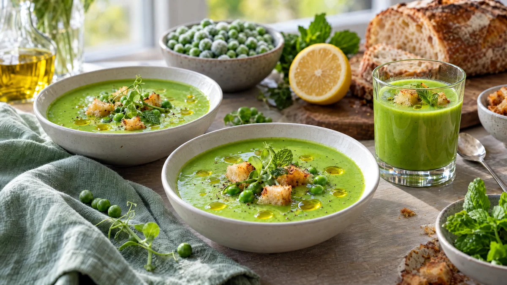

RESTFEST · RECEPTSoppa · Förrätt
Grön ärtvelouté med citronolja och vitlökskrutonger
En påse frysta ärter, en gul lök och gårdagens bröd. Det blir en lysande grön, sammetslen soppa med droppar av gyllene citronolja och krispiga vitlökskrutonger. Servera i små skålar eller glas och låt den smaka vår mitt i november.
- Förberedelse
- 10 min
- Tillagning
- 15 min
- Portioner
- 4 som förrätt
- Nivå
- Nybörjare
 Det här behöver du
Det här behöver du
JÄMFÖRT MED DIN KYL
Tryck på + vid det du behöver köpa.
Soppa
Citronolja
Vitlökskrutonger
Till servering
Gör så här
- Rör ihop olivolja, citronskal och salt till citronoljan. Låt den dra medan du lagar soppan.
- Hacka löken och vitlöken. Fräs dem i olivoljan på medelvärme i 4–5 minuter, tills löken är mjuk. Löken ska inte få färg, då blir soppan mindre klargrön.
- Häll i vatten och buljongtärning och koka upp. Lägg i de frysta ärterna, låt koka upp igen och sjud i 3–4 minuter. Inte längre, för överkokta ärter blir gråaktiga.
- Ta upp 2 msk ärter till garnering. Lägg i myntan och mixa soppan med en stavmixer i 2–3 minuter, tills den är helt slät. Vill du ha den extra sammetslen, passera den genom en sil.
- Rör ner havregrädden och citronsaften och värm försiktigt utan att koka. Smaka av med salt och vitpeppar.
- Skär brödet i tärningar, ca 1 cm. Stek dem i olivoljan med den krossade vitlöksklyftan på medelvärme i 4–5 minuter, tills de är gyllene och krispiga. Ta bort vitlöken och salta.
Dekoration och servering
- Servera soppan direkt så att den behåller den klargröna färgen.
- Häll upp i små djupa skålar, kaffekoppar eller glas.
- Droppa citronolja över ytan med en tesked, så att den lägger sig i gyllene pärlor.
- Lägg några krutonger, de sparade ärterna, en liten tuss ärtskott och ett myntablad ovanpå precis före servering, så att krutongerna håller sig krispiga.
- Soppan går också att servera kall, eller som amuse-bouche i små shotglas.
Mått och ugnstemperaturer
Måtten är svenska (dl, msk, tsk, krm). Ugnstemperaturerna gäller vanlig ugn med över- och undervärme; med varmluft, sänk med 20 grader.